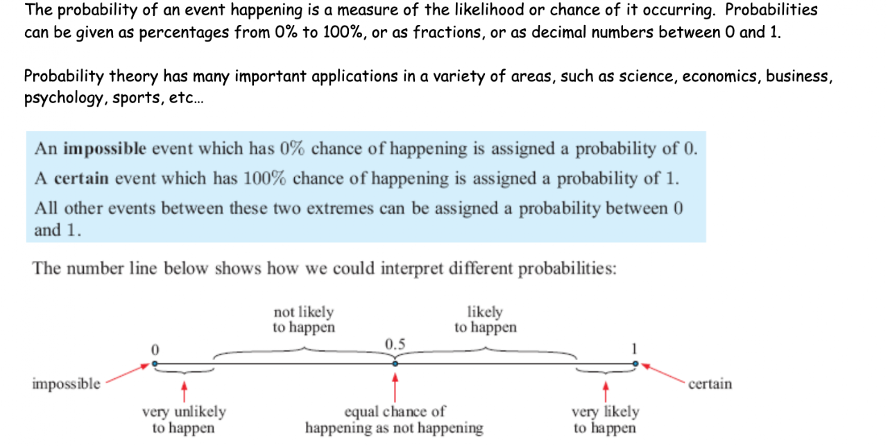
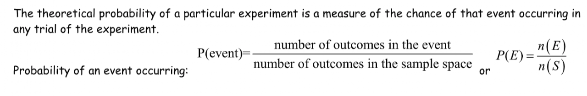
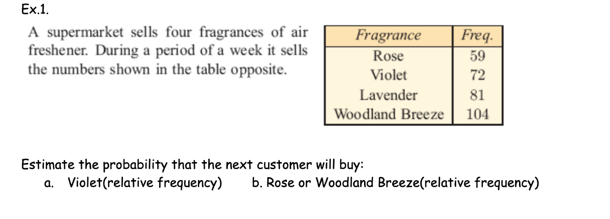
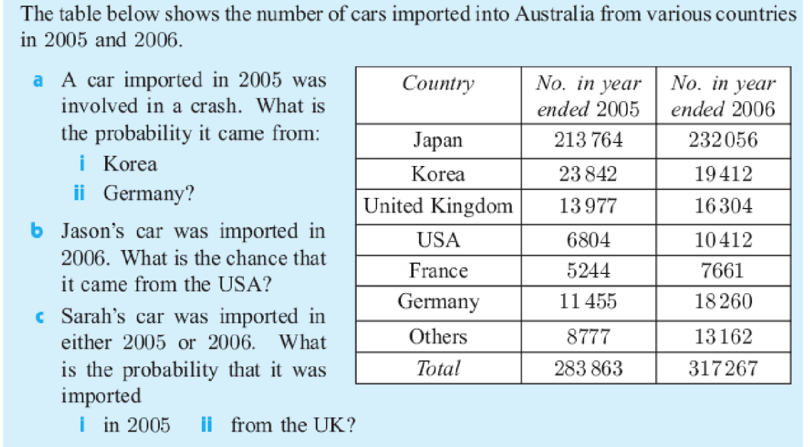
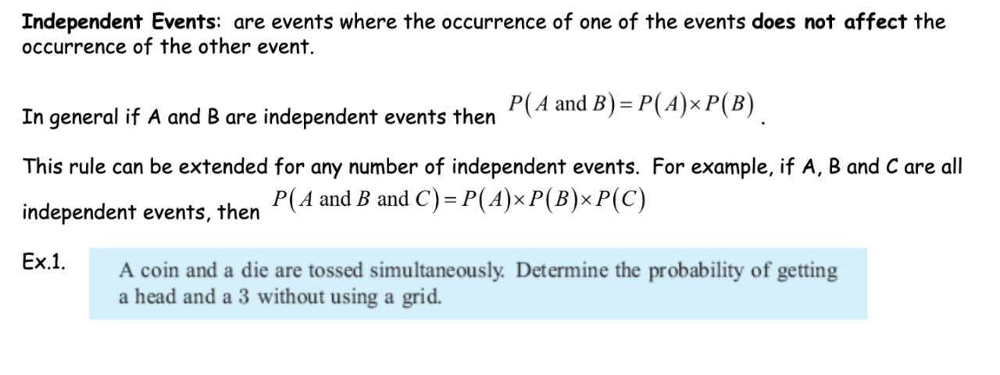
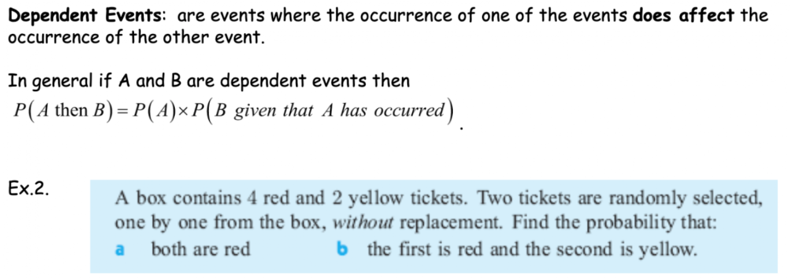

Contents
- Basic Probability Concepts
- Theoretical & Experimental Probability
- Probabilities from data
- Compound Probability (Independent & Dependent Events)
- Sampling with & without replacement
Unit 4 preview: Unit 4 Vocabulary (Dec. 9th, 2026)
Goal: Students will be able to find out the Unit 4 vocabs' definitions
Warm-up: Copy these words into your notebook.
- Probability:
- Odds:
- Theoretical probability:
- Sample space:
- Experimental probability
- Compliments
- Compound events
- Conditional probability
- Independent events
- Dependent events
- Mutually exclusive events
- Inclusive events
- Tree diagram
- Venn diagram
- Area diagram
- Expected value
Class activity:
Those who didn't take the midterm exam should do it now.
Write down New Year resolution on your notebook.
Unit 4 Preview (Dec. 10th, 2026)
Goal: Students can understand likelihood of an event
Warm-up: Copy the following into your notebook.

Q1. With the help of ChatGPT, Perplexity or Gemini, find definition of the following words
- Probability:
- Odds:
- Theoretical probability:
- Sample space:
Lesson 1- Basic Probability & Sample Space (Dec. 11th, 2026)
Goal: Students will be able to find out Sample Space of an Event
Warm up; Remember the definitions of the Four vocabs from yesterday.
Joel has an MP3 player called the Jumble. The Jumble randomly selects a song for the user to listen to. Joel's Jumble has 2 classical songs, 13 rock songs, and 5 rap songs on it.
Q1. what is the sample space of the MP3 player events?
Q2. What is the Probability the jumble plays rock song?
Q3. What is the Probability the jumble plays rap song?
Class Activity: Go to Canvas to take the Unit 4 Probability Quiz for the Formative Assessment
Lesson 2- Theoretical Probability and more (Dec. 14th, 2026)
Goal: Students will be able to understand Theoretical Probability.
warm-up: Q1. Write down again the definition of "Probability Tree diagram"
Q2. Before you throw a fair coin, What is the probability of having a tail?
Q3. Before you throw a coin twice, what are the odds of having a tail and a tail in a row?
Watch the video on the right and copy the notes into your notebook.
Classwork: Watch the video above and take notes into your notebook.
Lesson2-1 Theoretical & Experimental Probability (Dec. 15th, 2026)
Goal: Students can tell the difference between Theoretical Probability and Experimental Probability
Warm-up
Q1. Find the definition of Experimental Probability
Q2. If I threw a coin 50 times and it landed on heads 27 times and tails 23 times, What is the probability of heads?
P(heads) =
Q3. What is the probability of Tails
P(tails) =
Class Activity: Go to Canvas to solve Unit 4 Theoretical Probability Quiz for the Formative Assessment.
Watch the videos on the right and copy the video notes into your notebook.
[Document: B-Theoretical Probability.docx — owner to add sharing link]
Lesson2- 2 Theoretical & Experimental Probability (AMDM. PR. 5.1)- (Dec. 16th, 2026)
Goal: Students can determine conditional probabilities and probabilities of compound events to make decisions in problem situations
Warm-up;
Q1. Review the definition of Probability Tree Diagram.
Q2. Illustrate, using a tree diagram, the possible outcome when you toss a coin three times
Q3. Amy catches a 7:45 am bus to school. During a period of 79 days she arrives at school on time on 53 occasions. Estimate the probability that Amy: i. arrives on time
ii. arrives late
Copy the following
THEORETICAL & EXPERIMENTAL PROBABILITY
Theoretical probability is the probability that is determined on the basis of reasoning.
Experimental probability is the probability that is determined on the basis of the results of an experiment repeated many times.

Lesson1~2: Lesson review and Formative Test (Jan, 14th, 2026)
Goal: Students can use review lesson 1~2 and make a paragraph of the topic definition and explanations.
Warm-up.
Q1. Find and write the difference between Experimental Probability and Theoretical Probability.
Class Work : Research
- Write the Definition and Explanation(including the formula) of Theoretical Probability on Canvas
under the Unit 4 Theoretical Probability Paragraph
Lesson review: Probability in Everyday life (Jan, 15th, 2026)
Goal: Students can use understand the real applications of probability in life.
Warm-up: Copy the following into your notebook.
Probability in everyday life
Medical Decisions – When a patient is advised to undergo surgery, they often want to know the success rate of the operation which is nothing but a probability rate. Based on the same the patient takes a decision whether or not to go ahead with the same.
Politics : Many politics analysts use the tactics of probability to predict the outcome of the election's results. For example, they may predict a certain political party to come into power; based on the results of exit polls.
Typing on Smart Devices: When we type, the software constantly keeps suggesting words. It does this using probability- depending on which word is now commonly used.
Insurance Policies: When we get anything insured, we study which insurance policy would be appropriate depending on our usage of the thing and/or what are the chances of damage and what kind of recovery is possible.
Classwork: finish up the missing quizzes and the one paragraph writing from yesterday.
Lesson 3: Probabilities from data-(AMDM. PR.5.2)(Jan, 16th, 2026)
Goal: Students can use probabilities to make and justify decisions about risk in everyday life.
Warm-up: Solve the Ex.1. in the document below.
Class Activity:
- Find definitions of the following words
- Compliments in probability
- Compound events
- Conditional probability
- Watch any missing videos and take the video notes down for notebook check 7 next Friday

Lesson 3-1 : Probability from Data- review (Jan, 21, 2026)
Goal: Students can find out Probability, using data.
Warm-up: Copy and solve the problems below

Class Activity: Prepare the notebook check 7 this Friday. Dates include Jan.7th~ Jan.16th
- Jan. 7: heading, warm-up, reflection
- Jan. 8: heading, warm-up, reflection.
- Jan. 9: heading, warm-up, reflection
- Jan. 12: heading, warm-up, video, reflection
- Jan. 13: heading, warm-up, video, reflection
- Jan. 14: heading, warm-up, reflection
- Jan. 15: heading, warm-up, reflection
- Jan. 16: heading, warm-up, reflection
Formative Test : Experimental Probability Paragraph (Jan, 22nd, 2026)
Goal: Students can research Experimental Probability definitions and explanations.
Warm-up.
- Review 1 — the definitions of Theoretical and Experimental Probability from the Internet.
- Difference between the Theoretical and Experimental Probability.
Class Work: Quiz- Formative Assessment
- Go to Canvas, and take the quiz: Unit 4- Probability from Data
Notebook Check7 (Dec. 17th, 2026)
Notebook Check: Jan. 7th ~ Jan. 16th
- Organize the notebook by dates and titles.
- Add the videos' notes too
- Show the math working in each warm-up question.
Notebook Scoring
- 8 Headings: 2.5 pts per heading
- 8 Warm-ups: 5 pts per warm-up
- 2 Videos: 15 pts per video
- 8 reflections: 1.25pts per reflection
- Jan. 7 : heading, warm-up, reflection
- Jan. 8 : heading, warm-up, reflection.
- Jan. 9 : heading, warm-up, reflection
- Jan. 12 : heading, warm-up, video, reflection
- Jan. 13 : heading, warm-up, video, reflection
- Jan. 14 : heading, warm-up, reflection
- Jan. 15 : heading, warm-up, reflection
- Jan. 16 : heading, warm-up, reflection
Lesson 4: Compound Probabilities with Tree diagram (Dec. 18th, 2026)
Goal: Students can understand and find a compound probability
Warm-up Question;
Q1. Write the definition of compound probability and its formula.
Q2. A coin is tossed 3 times.
a. Draw a tree diagram and from it write down the sample space.
*Use the results from part (a) to find the probability of obtaining the following
b. only one tail
c. at least 2 tails
d. 2 tails
e. 2 tails in succession
Classwork: Watch the video and copy the notes into your notebook.
Lesson 4: Compound Probabilities with Vendiagram (Jan. 5th, 2027)
Goal: Students can understand and find a compound probability
Warm-up Q 1. Write down again the definition of Probability Venn Diagram
Q 2. In a certain Algebra 2 class of 30 students, 15 of them play basketball and 16 of them play baseball. There are 7 students who play both sports. What is the probability that a student chosen randomly from the class plays basketball or baseball?
Q 3. In a certain Algebra 2 class of 23 students, 15 of them play basketball and 16 of them play baseball. There are 4 students who play neither sport. What is the probability that a student chosen randomly from the class plays both basketball and baseball?
Class Activity: Go to Canvas to solve "Unit 4 Probability Quiz with or& and", for Formative assessment
Lesson 4: Compound Probabilities with examples (Jan. 6th, 2027)
Goal: Students can understand and find a compound probability
Warm-up
Q1. Joel has an MP3 player called the Jumble. The Jumble randomly selects a song for the user to listen to. Joel's Jumble has 2 classical songs, 13 rock songs, and 5 rap songs on it.
What is the probability that Jumble plays a rock song or rap song?
Q2. Tom comes to class on time with a 90% probability. John comes to class on time with a 70% probability. What is the probability Tom or John come to the classroom on time tomorrow?
Class Activity: Complete the Unit 4 Probability Quiz with Or& And
Lesson 4: Review Compound Probabilities (Jan. 7th, 2027)
Goal: Students can review compound probability
Class work: Go back to Jan. 26~28 for a review of Lesson 4
Lesson 4: Compound Probabilities (Jan. 8th, 2027)
Goal: Students can understand compound probability
Warm-up:
- Write the definition of an Independent Event
- Write the definition of a Dependent Event
Classwork:
- Watch the videos below and copy the notes into your notebook.
- Write Experimental Probability Paragraph
Lesson 4 -1 : Compound Probabilities: Independent Event (Feb. 2nd~3rd, 2026)
Goal: Students can understand and find a compound probability of an Independent Event.
Warm-up:

Class work: make sure to watch the video from yesterday :Compound Probability of Independent event.
Lesson 4 -2 : Compound Probabilities: Dependent Event (Jan. 11th, 2027)
Goal: Students can understand and find a compound probability of a Dependent Event.
Warm-up:

Class work: make sure to watch the video two days ago :Dependent Probability Introduction
Lesson 5: Sampling With & Without Replacement-(AMDM.PR.6.1) (Jan. 12th, 2027)
Goal: Students can calculate expected value to analyze mathematical fairness.
Warm-up
Q. Draw a tree diagram to solve the following question.
A bag containes 5 red and 3 blue and 2 green marbles. If three marbles are drawn out of the bag (without replacement), what is the probability, to the nearest 1000th, that all three marbles drawn will be red?
Classwork:
- Watch the video and summarize it.
- Go to Canvas and take the quiz: Unit 4 Compound Probability
Unit 4 Review and Preparation for the Unit Test (Feb. 6th, 9th 2026)
Goal: Students can review the unit and prepare for the Unit 4 test.
Class activity: Write the followings into your notebook
- What did you learn from this Unit
- Why do you think it is important and meaningful?
- Where else can you use it in a similar life situation?
Unit 4 Test (Jan. 13th, 2027)
On Canvas under the Unit 4 test, upload the Word document file that includes a heading, title, and the three paragraphs.
Choose one of the following topics for the Math Essay
- Probability
- Theoretical Probability
- Experimental Probability
- Compound Probability
Notebook Check 8 (Jan. 14th, 2027)
Notebook Check: Jan. 21st ~ Feb. 4th
- Organize the notebook by the dates and titles.
- Add the videos' notes too
- Show the math working in each warm-up question.
Notebook Scoring
- 8 Headings: 2.5 pts per heading
- 8 Warm-ups: 5 pts per warm-up
- 2 Videos: 15 pts per video
- 8 reflections: 1.25 pts per reflection
- Jan. 21 : heading, warm-up, reflection
- Jan. 22 : heading, warm-up, reflection.
- Jan. 26 : heading, warm-up, video, reflection
- Jan. 27 : heading, warm-up, reflection.
- Jan. 28 : heading, warm-up , reflection
- Jan. 30 : heading, warm-up, video, reflection
- Feb. 2~ 3 : heading, warm-up, reflection
- Feb. 4 : heading, warm-up, video, reflection